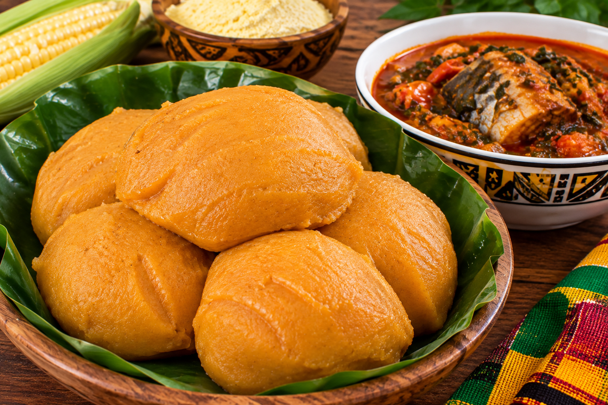
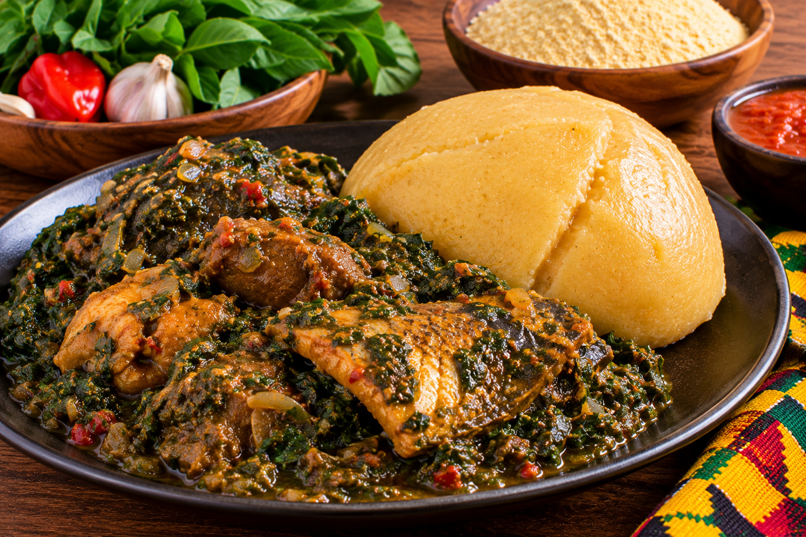
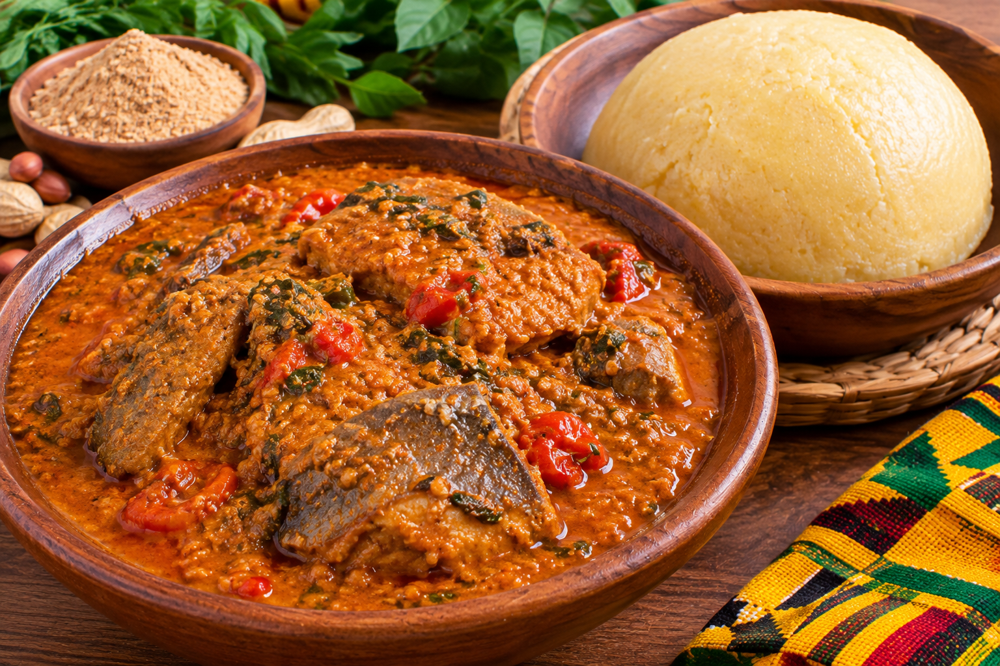
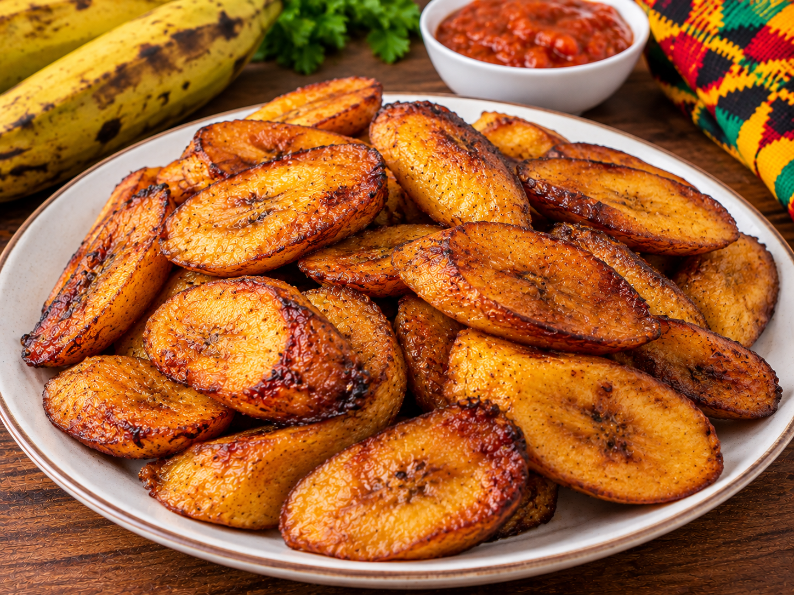

Nos recettes togolaises 🇹🇬
Découvrez une sélection de recettes traditionnelles qui font la richesse et la diversité de la cuisine togolaise.



Djenkoumé
Une préparation traditionnelle à base de farine, reconnaissable à sa belle couleur orangée.
Voir la recette



Sauce arachide
Une sauce onctueuse à base d'arachides, idéale pour accompagner plusieurs plats.
Voir la recette

Poisson braisé
Un poisson délicieusement braisé, accompagné d'une préparation savoureuse.
Voir la recette


Beignets togolais
De délicieux beignets dorés, parfaits pour le petit-déjeuner ou le goûter.
Voir la recette
Banane plantain frite
Des morceaux de banane plantain joliment dorés et croustillants.
Voir la recette
Pâte de manioc
Une pâte traditionnelle à base de manioc, à déguster avec différentes sauces.
Voir la recette